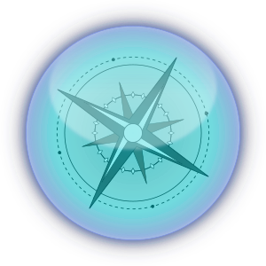

Challenge
Scientists need help
They’re searching the microscopic world for answers to our biggest problems, but it’s hard to know where to start. That’s why many use computer simulations to point them in the right direction, just as explorers rely on maps to find their way.
Finding answers is tough, and without more computers, doing scientific research can be a bit like exploring with an incomplete map
Solution

Impact
Get results that matter

As a World Community Grid volunteer, your device does research calculations when it’s idle, so just by using it as you do every day, you can help scientists get results in months instead of decades. With your help, they can identify the most important areas to study in the lab, bringing them one step closer to discoveries that save lives and address global problems.
Attribution
Attribution for Images:
Icons made by Lucy G from www.flaticon.com is licensed by CC 3.0 BY
Background image of DNA Designed by Freepik